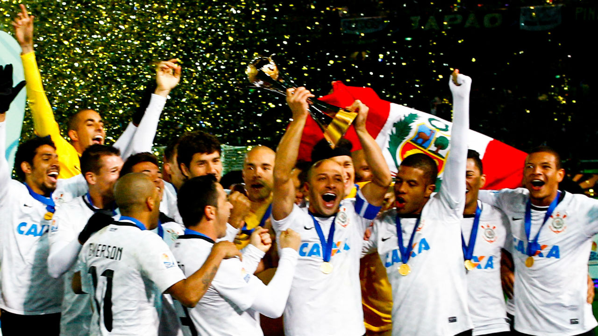
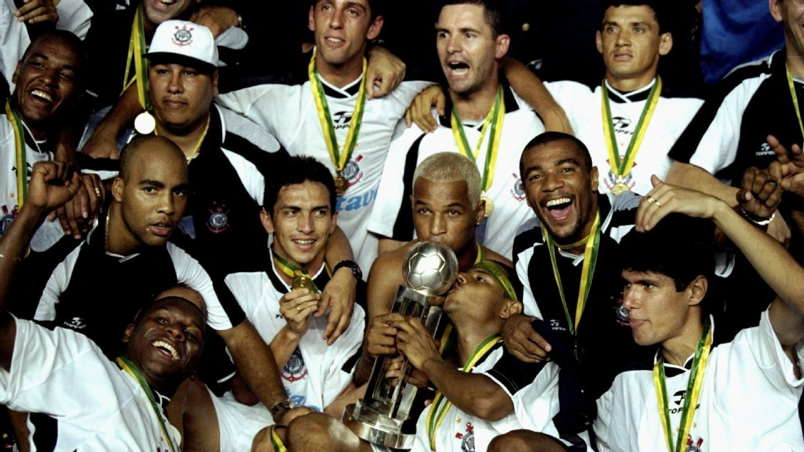

Foi fundado como uma equipe de futebol no dia 1 de setembro de 1910 por um grupo de operários do bairro Bom Retiro. Seu nome foi inspirado no Corinthian FC de Londres, que excursionava pelo Brasil, s endo chamado pela imprensa brasileira da época de Corinthian's team.
Mas a história da Neo Química Arena começou, de fato, no dia 1º de setembro de 2010, quando a construção do tão sonhado estádio alvinegro foi confirmada na festa do centenário do clube no Vale do Anhangabaú, para cerca de 150 mil pessoas.
O maior público da Arena foi na partida semifinal entre Holanda e Argentina, no dia 9 de julho, que contou com 63 267 presentes e até hoje o recorde de espectadores no estádio.
A base do Corinthians é uma das mais vitoriosas do Brasil. Na Copa São Paulo de Futebol Júnior, por exemplo, o Alvinegro é o maior campeão com 10 conquistas. Contudo, além de troféus, as categorias de formação renderam muitos frutos à equipe principal do Timão – desde que o clube foi fundado, passando pelo Terrão, Parque São Jorge, CT de Itaquera até os dias de hoje.
Veja nossos 10 atletas que já disputaram a Champions League
Nossa lista com todos os ídolos do timão
historias não contadas
Após vencer o Paulistão, o elenco de Fábio Carille tentava provar que o título estadual não veio por acaso e que eram uma equipe que brigava pela parte de cima da tabela
O primeiro turno foi marcado por jogos memoráveis, um futebol convincente e digno de campeão. Assim, o Corinthians venceu suas batalhas e terminou o turno sem perder nem uma partida! Fez história no campeonato! 19 jogos de invencibilidade no Brasileirão e a segunda maior sequência sem perder da história do clube: 34 partidas sem derrotas.
Perdendo apenas um clássico no ano e apenas nove jogos na tempo um aproveitamento fora do comum. O título foi incontestável. De quarta força a heptacampeão brasileiro!